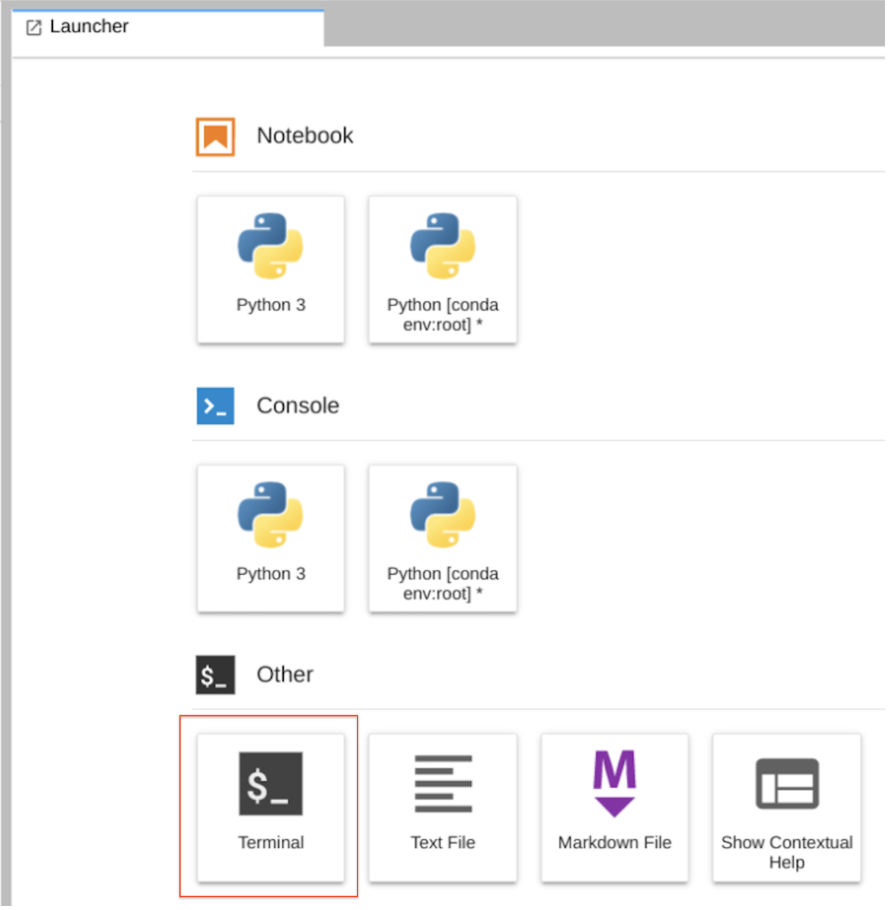
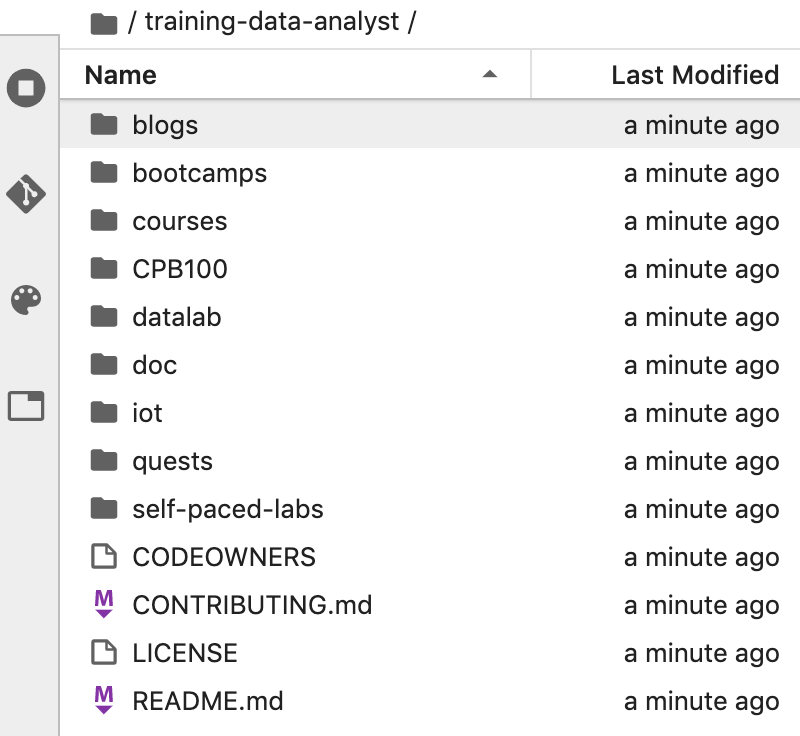

training-data-analyst ノートブックのクローンを JupyterLab インスタンス内に作成するには:
ステップ 1
JupyterLab で、[Terminal] アイコンをクリックして新しいターミナルを開きます。

ステップ 2
コマンドライン プロンプトで、次のコマンドを入力して Enter キーを押します。
git clone https://github.com/GoogleCloudPlatform/training-data-analyst
ステップ 3
リポジトリのクローンが作成されたことを確認します。training-data-analyst ディレクトリをダブルクリックすると、作成された内容が表示されます。このディレクトリには、本コースのすべての Jupyter ノートブック ラボで使用するファイルが含まれています。
